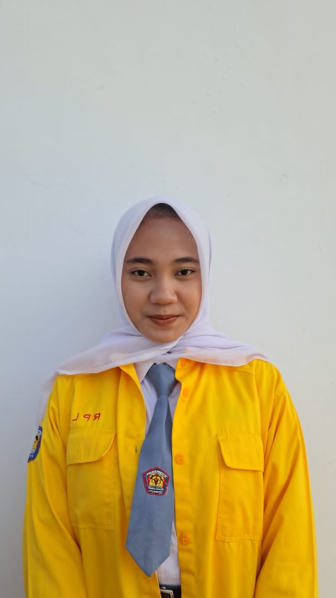
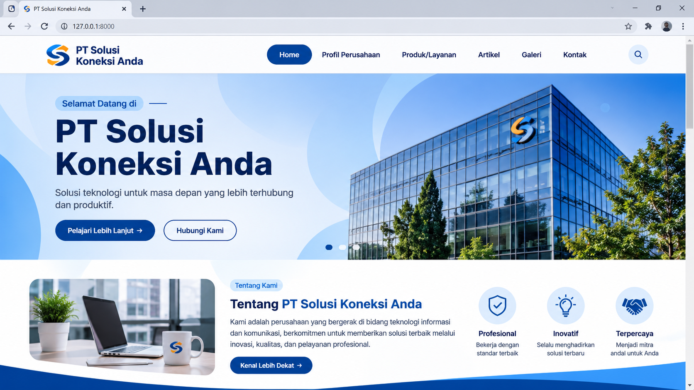

HALO, SENANG BERTEMU DENGAN ANDA!
Perkenalkan, saya Intan Sonia, siswa SMK Negeri 1 Kawali jurusan Rekayasa Perangkat Lunak (RPL). Saya memiliki ketertarikan dalam bidang teknologi informasi, khususnya pengembangan website dan aplikasi. Saya memiliki pengetahuan dasar HTML, CSS, PHP, Laravel, dan MySQL. Saya senang mempelajari hal baru serta terus mengembangkan keterampilan di bidang teknologi.
Membuat dan mengembangkan halaman website.
Mengelola dan menyimpan data menggunakan MySQL.
Mengembangkan ide dan mempelajari hal baru.

KENALI SAYA LEBIH DEKAT
Saya merupakan siswa SMK Negeri 1 Kawali jurusan Rekayasa Perangkat Lunak (RPL) yang memiliki ketertarikan dalam bidang teknologi informasi, khususnya pengembangan website dan aplikasi.
Saya memiliki pengetahuan dasar dalam penggunaan HTML, CSS, PHP, Laravel, dan MySQL. Saya senang mempelajari hal-hal baru serta memiliki kemampuan berpikir secara teliti.
Saya mampu bekerja secara mandiri maupun dalam tim. Saya juga memiliki motivasi tinggi untuk terus mengembangkan keterampilan dan memperoleh pengalaman baru sebagai bekal memasuki dunia kerja.
Saya berusaha menjadi pribadi yang disiplin, bertanggung jawab, mudah beradaptasi, dan memiliki semangat untuk terus belajar serta berkembang.
PERJALANAN PENDIDIKAN SAYA
2024 – 2027
Jurusan Rekayasa Perangkat Lunak (RPL). Mempelajari dasar-dasar pemrograman, pengembangan website, pengelolaan database, serta pembuatan aplikasi.
2021 – 2024
Mempelajari berbagai mata pelajaran umum serta mengembangkan kemampuan komunikasi, kedisiplinan, dan kerja sama.
PENGALAMAN YANG SAYA MILIKI

Saya mendapatkan pengalaman Praktik Kerja Lapangan (PKL) di PT Wanara Digital Indonesia. Selama kegiatan tersebut, saya mempelajari proses pengembangan dan pemeliharaan website perusahaan.
Beberapa kegiatan yang saya lakukan antara lain:
• Membantu proses pengembangan dan pemeliharaan website perusahaan.
• Menggunakan HTML, CSS, PHP, Laravel, dan MySQL dalam kegiatan pengembangan website.
• Membantu melakukan pengujian terhadap fitur aplikasi untuk memastikan fungsinya berjalan dengan baik.
• Mempelajari proses pembuatan, pengelolaan, serta perbaikan website.
• Bekerja sama dengan tim dalam menyelesaikan tugas sesuai arahan pembimbing.
Selama menempuh pendidikan di sekolah, saya mengikuti berbagai kegiatan yang membantu mengembangkan kemampuan diri, komunikasi, dan kerja sama.
Beberapa kegiatan yang saya lakukan antara lain:
• Berpartisipasi dalam kegiatan kelompok dan menyelesaikan tugas bersama anggota tim.
• Mengembangkan kemampuan komunikasi dan kerja sama dalam lingkungan sekolah.
• Belajar mengatur waktu serta menyelesaikan tanggung jawab sesuai tugas yang diberikan.
• Mengembangkan sikap disiplin dan tanggung jawab dalam menyelesaikan kegiatan sekolah.
• Belajar menghargai pendapat dan bekerja sama dengan orang lain.
KEMAMPUAN YANG SAYA MILIKI
Membuat struktur serta mengatur tampilan halaman website.
Memahami dasar pemrograman untuk pengembangan website.
Memahami dasar pengembangan aplikasi berbasis web.
Mengelola dan menyimpan data menggunakan database.
Membuat dan mengembangkan website sederhana.
Mengelola serta mengolah data dalam database.
KEMAMPUAN DALAM BEKERJA
Memiliki kemampuan komunikasi yang baik.
Mampu bekerja sama dan berkolaborasi dalam tim.
Mampu mengatur waktu dan menjaga kedisiplinan.
Mampu berpikir untuk menemukan solusi masalah.
Berusaha menyelesaikan pekerjaan dengan baik.
Memiliki kemauan tinggi untuk belajar dan berkembang.
MARI TERHUBUNG
Silakan isi formulir berikut untuk menghubungi saya.